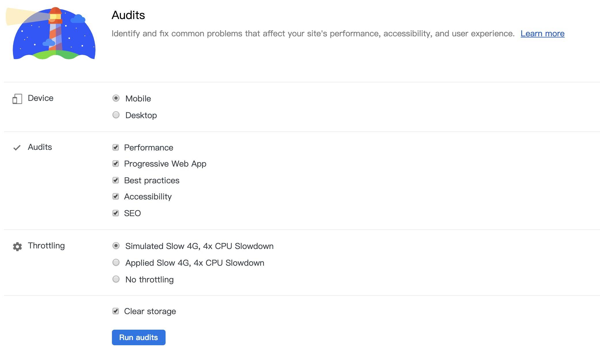
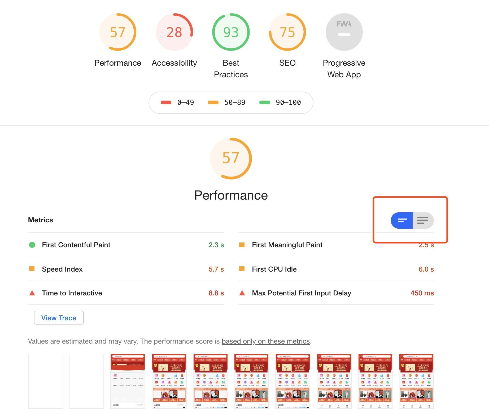
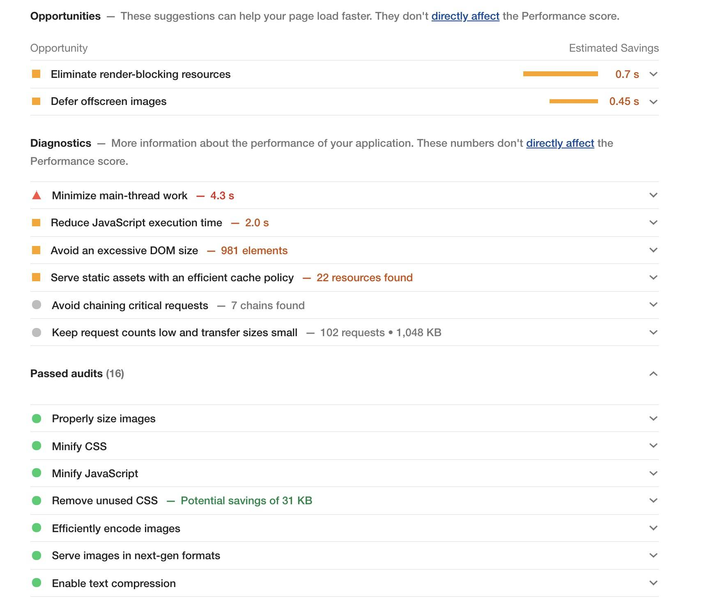
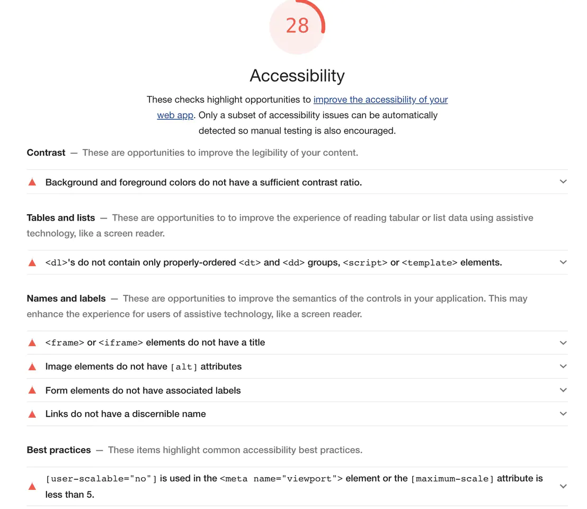
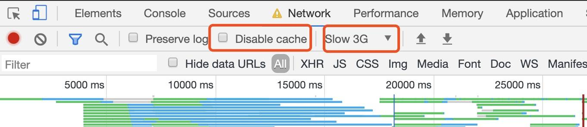
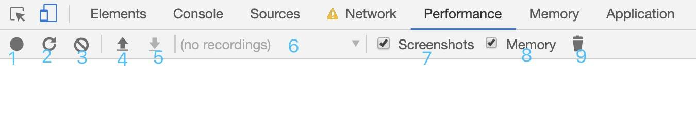
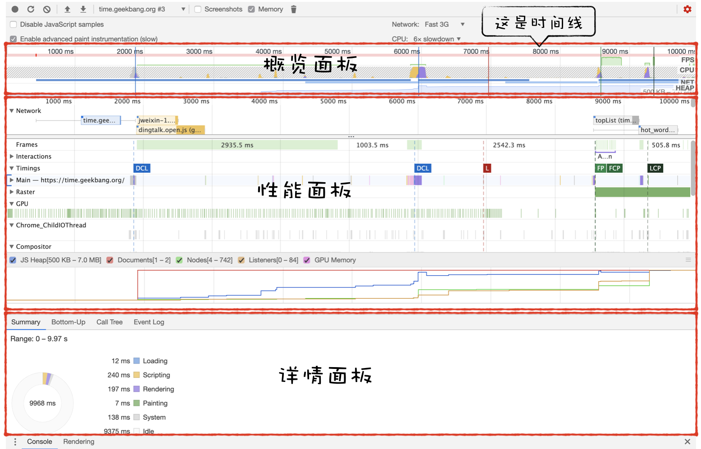
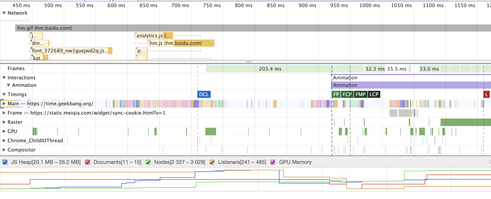
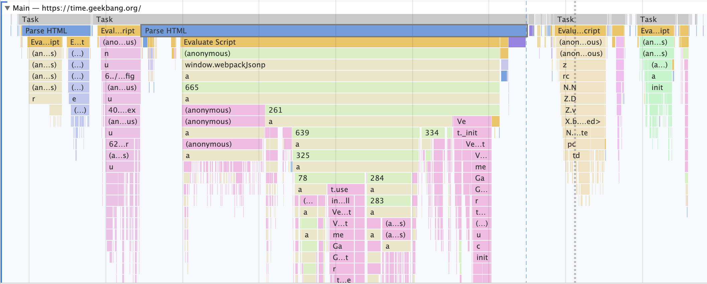

性能优化——工具使用
前言
本人平时学习及收集内容，欢迎参入一起讨论。
内容
一、Audits
Audits 其实就是 LightHouse，LightHouse 是 Google 开源的一个自动化测试工具，它通过一系列的规则来对网页进行评估分析，最终给出一份评估报告（注意使用 Audit 功能需要翻墙）。它的面板是这样的：

Audit 的配置模块主要有两部分组成，一个是监测类型，另外一个是设备类型（Device）
1.1 整体情况
Aduits 主要从五个方面来给网页打分，分别是：
- 监测并分析 Web 性能（Performance）；
- 监测并分析 PWA（Progessive Web App）程序的性能；
- 监测并分析 Web 应用是否采用了最佳实践策略（Best practices）；
- 监测并分析是否实施了无障碍功能（Accessibility），无障碍功能让一些身体有障碍的人可以方便地浏览你的 Web 应用。
- 监测并分析 Web 应用是否采实施了 SEO 搜索引擎优化（SEO）。
在选择了设备、评估方面、网络情况等选项后，点击 Run Audits，我们将会得到一份报告。

上图一个总体报告，可以看出，这个页面的性能不太合格。当然一次的测试也说明不了什么问题，只能做个参考。我们看它的性能指标分别有：
- First Contentful Paint：内容首次开始绘制。
- First Meaningful Paint：可以简单理解为用户看到网页主要内容的时间，分数越低，页面显示其主要内容的速度就越快。图中例子，网页首次有效绘制时间为 2.5s。
- Speed Index：速度指标是一个页面加载性能指标，向你展示明显填充页面内容的速度，此指标的分数越低越好。
- First CPU Idle：首次 CPU 空闲时间
- Time to Interactive：可互动时间，页面中的大多数网络资源完成加载并且 CPU 在很长一段时间都很空闲的所需的时间。此时可以预期 cpu 非常空闲，可以及时的处理用户的交互操作。
- Max Potential First Input Delay：最大的输入延迟时间，输入响应能力对用户如何看待你应用的性能起着关键作用。应用有 100 毫秒的时间响应用户输入。如果超过此时间，用户就会认为应用反应迟缓。
这些时间，都可以点击图中红框切换展示方式，会附上对应的时间解释，然后可以点击 Learn more 来查看详细的指标介绍。在文档中，每一项指标都会明确的分为三个部分：为什么说此审查非常重要；如何通过此审查；如何实现此审查；
1.2 性能指标优化建议解读
性能建议主要分为 3 类，Opportunities 可优化项、手动诊断项、通过的审查项。本次的例子如下图：

可优化项
- 延迟会阻塞渲染的资源加载
- 延迟视口外的图片加载
手动诊断项
建议：
- 最小化主线程工作
- 减少 JavaScript 执行时间
- 避免 DOM 太大
- 通过有效的缓存策略缓存一些静态资源
- 避免链接关键请求
- 保持低请求数量和小传输大小
通过的审查项
这里列出的都是做的好的地方，本文例子共有 16 条。
1.3 Accessibility 辅助功能
辅助功能指的是那些可能超出“普通”用户范围之外的用户体验，他们以不同于你期望的方式访问你的网页或进行交互

辅助功能类别测试屏幕阅读器的能力和其他辅助技术是否能在页面中正常工作。例如：按元素来使用属性，标签使用是否规范，img 标签是否缺少 alt 属性，可辨别的元素命名等等。
二、Performance
2.1 分析步骤说明
首先，我们在分析的时候，建议使用隐身模式打开页面，排除一些插件等因素对页面性能情况的影响。然后，我们把页面缓存勾选去掉，要测 disable cache 的情况，再把网络调整一下，我们电脑打开页面的时候一般都连着 wifi 等，要更真实一些去测页面的性能，还是把网络调到 3G 等情况比较好，如图：

调整好之后，我们切到 Performance 面板，这里先说明一下一些按钮的作用：

上图，从左到右分别代表的是：
- 手动开始记录，开始后需要手动结束
- 自动重启页面，并记录整个页面加载的过程。这个是最常用的，一般大概分析页面性能的时候都是点这个就够了
- 清除性能录制的记录
- 上传页面性能录制的数据
- 下载页面性能录制的数据
- 选择要展示的性能记录。你可能进行了多次分析，这里可以切换去看每次的结果
- 是否捕捉页面加载过程的截图，这个一般都要勾选
- 是否记录内存变化
- 垃圾回收，点击了即进行一次垃圾回收
2.2 认识报告页
生成的报告页，如下图所示：

我们可以将 Performance 分为三个主要的部分，分别为概览面板、性能指标面板和详情面板。
2.3 概览面板
Performance 就会将几个关键指标，诸如页面帧速（FPS）、CPU 资源消耗、网络请求流量、V8 内存使用量（堆内存）等，按照时间顺序成图表的形式展现出来，这就是概览面板。
有了概览面板，我们就能一览几个关键的历史数据指标，进而能快速定位到可能存在问题的时间节点。
- 如果 FPS 图表上出现了红色块，那么就表示红色块附近渲染出一帧所需时间过久，帧的渲染时间过久，就有可能导致页面卡顿。
- 如果 CPU 图形占用面积太大，表示 CPU 使用率就越高，那么就有可能因为某个 JavaScript 占用太多的主线程时间，从而影响其他任务的执行。
- 如果 V8 的内存使用量一直在增加，就有可能是某种原因导致了内存泄漏。
除了以上指标以外，概览面板还展示加载过程中的几个关键时间节点，如 FP、LCP、DOMContentLoaded、Onload 等事件产生的时间点。
2.4 性能面板
通常，我们通过概览面板来定位到可能存在问题的时间节点，接下来需要更进一步的数据来分析导致该问题的原因，这就是需要引入性能板了，在性能面板中，记录了非常多的性能指标项，比如Main指标记录渲染主线程的任务执行过程，Compositor 指标记录了合成线程的任务执行过程，GPU 指标记录了 GPU 进程主线程的任务执行过程。有了这些详细的性能数据，就可以帮助我们轻松地定位页面的性能问题。
简而言之，我们通过概览面板来定位问题的时间节点，然后再使用性能面板分析该时间节点内的性能数据。
分析性能面板各个指标项的具体含义。参考下图：

观看上图的左边，我们可以看到它是由很多性能指标项组成的，比如 Network、Frames、Main 等，下我们就来一一分析这些性能指标项的含义。
- Main 指标，它记录了渲染进程的主线程的任务执行记录，在 Performace 录制期间，在渲染主线程程上执行的所有记录都可以通过 Main 指标来查看，你可以通过点击 Main 来展开主进程的任务执行记录。具体你可以观察下图：

观察上图，一段段横条代表执行一个个任务，长度越长，花费的时间越多；竖向代表该任务的执行记录。
Main 指标就是记录渲染主线上所执行的全部任务，以及每个任务的详细执行过程。
具体内容可参考加餐五 | 性能分析工具：如何分析 Performance 中的 Main 指标？
- Network 指标，网络记录展示了页面中的每个网络请求所消耗的时长，并以瀑布流的形式展现。这块内容和网络面板的瀑布流类似，之所以放在性能面板中是为了方便我们和其他指标对照着分析。
- Timings 指标，用来记录一些关键的时间节点在何时产生的数据信息，关于这些时间点的信息可以参考上一篇文章性能优化——专业术语
- Frames 指标，也就是浏览器生成每帧的记录，我们知道页面所展现出来的画面都是由渲染进程一帧一帧渲染出来的，帧记录就是用来记录渲染进程生成所有帧信息，包括了渲染出每帧的时长、每帧的图层构造等信息，你可以点击对应的帧，然后在详细信息面板里面查看具体信息。
- Interactions 指标，用来记录用户交互操作，比如点击鼠标、输入文字等交互信息。
2.5 详情面板
通过性能面板的分析，我们知道了性能面板记录了多种指标的数据信息，并且以图形式展现在性能面板上。
参考资料
- 加餐四｜页面性能工具：如何使用 Performance？
- 加餐五 | 性能分析工具：如何分析 Performance 中的 Main 指标？
- 前端性能优化之利用 Chrome Dev Tools 进行页面性能分析
- 全新 Chrome Devtool Performance 使用指南
- Chrome 开发者工具使用指南
联系作者
平凡世界，贵在坚持。

← 性能优化——专业术语 图片优化→